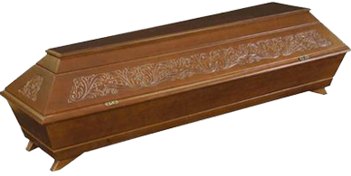
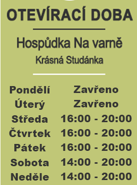
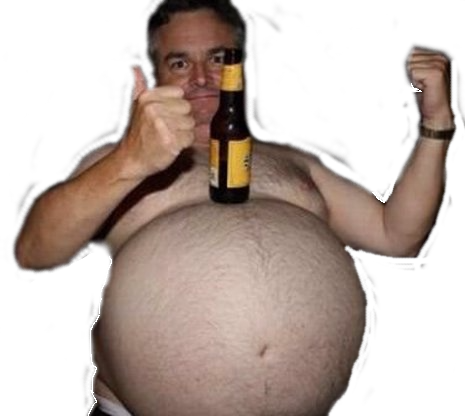

Ahoj detektive. Dnes budeš mít za úkol objasnit vraždu majitele
autoservisu. Při vyšetřování si musíš všímat každého detailu, aby jsi
obvinil správného vraha.
Hodně štěstí!

Mrtvý: Alfréd Kolejný
Věk: 48 let
Rodina: ženatý, 8 dětí
Bydliště: mjr. Plíška 652, Modřany, Praha 12
Povolání: majitel autoservisu
Trestní rejstřík: V roce 2008 přišel o řidičský průkaz na dva roky
za rychlost
Způsob smrti: 7 ran tupým předmětem do hlavy. Vražedná zbraň se
nenašla, otisky prstů také ne. Čas a datum smrti pátek 6. května v
21:25
Svědkové: Kolem 21:15 slyšeli hádku dvou mužů a následně rány. Kolem
21:35 ze servisu odjelo auto oběti (Škoda Citigo, SPZ: 4A5 5685), na
řidiče neviděli.
Možní pachatelé: Jaroslav Malý, Karel Kojný, Arnošt Pardubický


Jméno: Jaroslav Malý
Věk: 58 let
Rodinný stav: svobodný
Bydliště: Hospodská 445, Praha 4
Povolání: nezaměstnaný, nemá moc peněz
Trestní rejstřík: V roce 2004 byl ve vězení na 18 měsíců za napadení a
ublížení na zdraví.
Alibi: V den vraždy byl v hospodě do 19:00, poté šel s ostatními
štamgasty na fotbal, kde byl do 22:00 a zachytila ho zde bezpečnostní
kamera
Dovednosti: Řidičský průkaz nemá, ale řídit umí, nevejde se do malých
aut
Jméno: Karel Kojný
Věk: 32 let
Rodinný stav: vdovec
Bydliště kpt. Anděla 5596, Modřany, Praha 4
Povolání: majitel konkurenčního autoservisu, peněz má dostatek
Trestní rejstřík: čistý
Alibi: podle jeho výpovědi byl do 21:26 v hospodě. Pak šel domů.
Svědky nemá